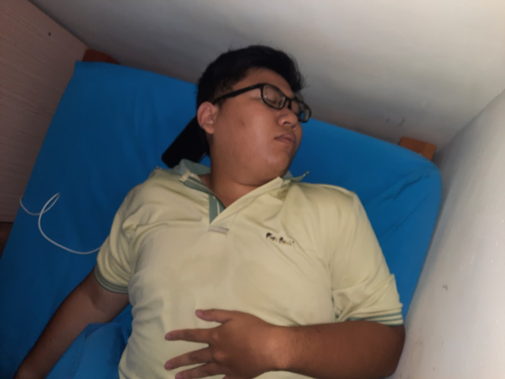
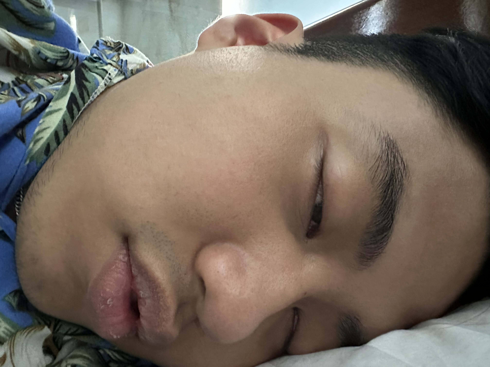

Bài viết này được viết vào tháng 3 năm 2026, nhưng mình vẫn muốn kể về nửa cuối năm ngoái.
Chắc bởi vì có cực kì nhiều chuyện để kể (có khi phải chia ra thành các post khác nữa :DD).
Tất cả mục tiêu học thuật và giấc mơ khoa học của mình trong 3.5 năm đại học đều được bùng nổ trong thời gian này, và tới tận bây giờ mình vẫn còn thấy vui vì nó.
1. Bảo vệ khóa luận tốt nghiệp và paper đầu tay
Đầu tiên là việc bảo vệ khóa luận tốt nghiệp, mình đã hoàn thành khóa luận và đã được bảo vệ thành công công trình sau hơn 1 năm nghiên cứu.
Mới đầu 2 thằng chỉ chọn chủ đề này ( Unlearning GAN ) tại vì nó nghe lạ lạ hay hay với cái mechanism 2 module đấu nhau của nó(:DD??). Rồi tới chuỗi ngày thằng Huy đi summer school bên Đài (đi date với Huy Phú) với bị viêm não (solo trong 2 tháng đầu luôn). Tiếp đó là chuỗi ngày chả hiểu mình đang làm cái gì, báo cáo thầy Thái thì cứ "sắp adapt được model rồi thầy ơi" rồi vẫn stuck tiếp (cảm ơn thầy vì đã không đấm tụi em :DD).

Mà hay ở chỗ 2 thằng vẫn cho ra được nhiều ý tưởng để tiếp tục chủ đề này, cứ như vậy vẫn lê lết cho đến lúc hoàn thành base, lit review, chốt ý tưởng. Đùng 1 cái đến 1 ngày đi họp với thầy Thái, thầy kêu là "2 đứa viết báo nha, nộp cái hội nghị này nè" ( khúc này là còn 2 tháng nữa là bảo vệ,1 tháng nữa là nộp paper ), cả 2 thằng ai cũng vui tại cuối cùng cũng được nộp conf, cũng chả nhưng mà cũng cóng tay tại cái gì cũng sắp tới rồi mà codebase với paper chưa viết.
Và thời gian còn lại là quả bán sống bán chết của 2 thằng, train server (kẹt xe dữ dằn do nhóm nào cũng cần train), eval trên kaggle, viết paper, sửa hyperparam, lặp lại..
Cuối cùng cũng tới ngày bảo vệ, chả hiểu sao cái công trình nghiên cứu 2 thằng nắm trong lòng bàn tay nhưng mà tới ngày bảo vệ thằng nào cũng run, đêm trước ngày bảo vệ còn không ngủ được :DD??. Lúc bảo vệ bị mấy thầy đấm sml nhưng cuối cùng vẫn 10 ( mấy em khóa sau mà đọc được cái này thì +1 kinh nghiệm nha)

Cuối cùng thì vẫn là cảm ơn thầy Thái hehe.
2. Bạn bè
Trong thời gian này mình gặp thêm nhiều người bạn mới và gặp lại nhiều anh em cũ. Có nhiều khác biệt nhưng điểm chung là tất cả mọi người đều cho mình nhiều góc nhìn khác nhau về thứ gọi là "Khoa học"-cũng là thứ mà mình đã đang và định sẽ theo đuổi trong tương lai.
Số lượng bạn bè mình tăng bất thường trong 6 tháng này (ít nhất là bất thường với 1 người hướng nội :DD) làm mình khá là bất ngờ :DD, có khi nào mình không hướng nội vậy hông ~~
2.1 Huy Tống - Huy Phú
2 thằng này bằng 1 cách nào đó đã gặp và quen biết nhau trước. Sau đó thì mình biết được và làm quen mỗi thằng do công việc và hoàn cảnh không liên quan gì tới nhau, xong sau này cả 3 thằng mới vỡ lẽ ra là biết nhau :DD
Ảo vcl.

Vô tình quen biết Huy Phú là do mình tham gia cái Erasmus Mundus Mentorship Program 2025. Lúc đó là không biết nó là ai luôn, chỉ biết là trước đó Huy Tống có nói là quen 1 thằng bạn EM, tự nhiên nộp hồ sơ xong Huy Tong kêu là "thằng bạn" nó nhắn là biết thằng nào tên Gia Hưng không, xong 2 thằng mới vỡ lẽ ra là biết nhau :DD. Rồi từ đó mới nói chuyện dần rồi quen dần như bây giờ.

Điểm chung của 2 thằng này là đều thích ngủ và yêu thích vật lý nghiên cứu, dù thực tế là hướng này ở Việt Nam hiện đang khá ngợp ( năm 2025 ). Tinh thần khoa học của 2 thằng này khá là cao, các task tưởng chỉ có ở các viện nghiên cứu siêu tân tiến trong phim thì 2 con vợ này đều biết hoặc thậm chí là đang làm project luôn. Respect respect.
2.2 Duy Tùng
Có thể nói ngắn gọn là GOAT máy tính trong tất cả các ae ( Nhì QG Nhì QG Nhì QG) ( Đọ tay với Thanh Hoa Bắc Đại ). Chơi với nhau từ hồi lớp 2 nhưng mà được đúng năm lớp 2 đó xong không chơi với nhau nữa do khác lớp khác trường. Xong đùng cái tới lớp 12 học IELTS chung nên có practice chung nhóm, xong từ đó mới nói chuyện lại. Tính xuôi tính ngược gì thằng này cũng học bá, giỏi mọi thứ luôn (từ toán đến lập trình thi đấu xong research nữa) nên khá là muốn học hỏi từ nó nhiều.
Mặc dù học giỏi nhưng mà thằng này lâu lâu vẫn điên theo chu kì, nên là lâu lâu vẫn chả hiểu nó đang làm/hay đang nói cái gì :DD??

2.3 Huang Lab

2.4 International friend (Hiroto-Naufal-Naoki-Ryota-Lea-Peicheng)